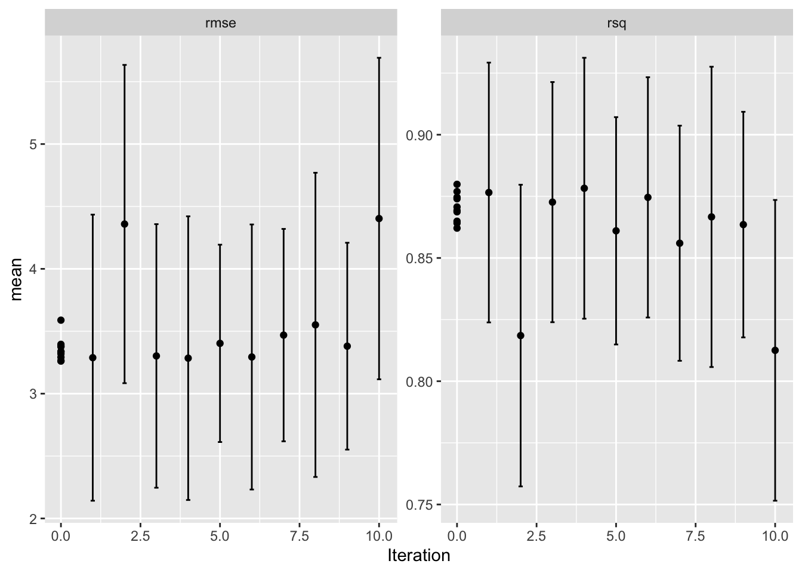
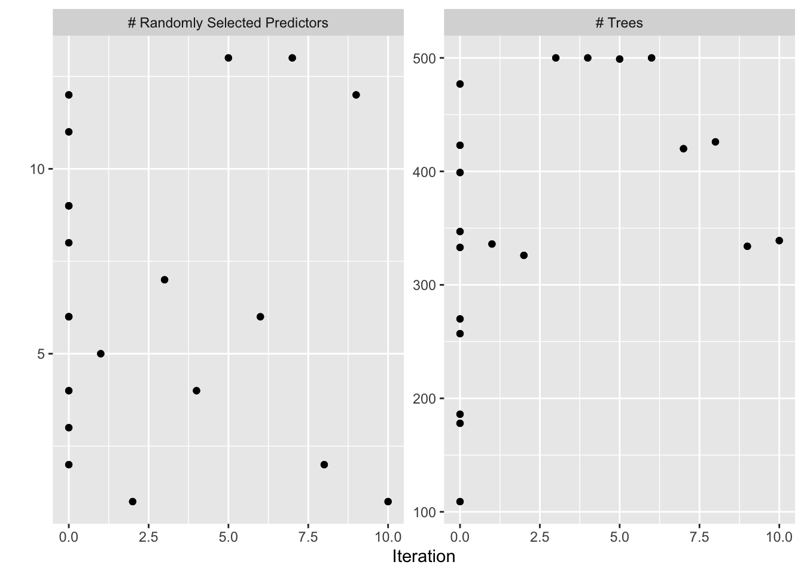
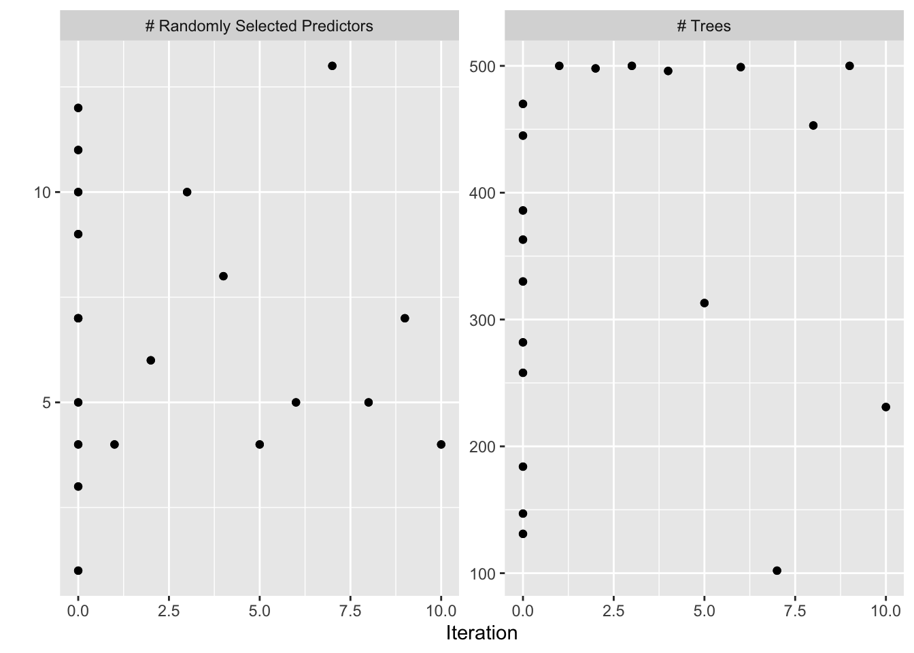

MA8701 Advanced methods in statistical inference and learning
Part 3: Ensembles. L16: Hyperparameter tuning
Course homepage: https://wiki.math.ntnu.no/ma8701/2023v/start
Before we start
Literature
Hyperparameter tuning with Bayesian Optimization. Frazier (2018): “A tutorial on Bayesian optimization”, https://arxiv.org/abs/1807.02811: Sections 1,2,3,4.1, 5: only the section “Noisy evaluations”, 6,7.
G. A. Lujan-Moreno, P. R. Howard, O. G. Rojas and D. C. Montgomery (2018): Design of experiments and response surface methodology to tune machine learning hyperparameters, with a random forest case- study. Expert Systems with Applications. 109, 195-205.
Choosing hyperparameters
- What are hyperparameters?
- Which hyperparameters have we encountered in the course so far?
Hyperparameters are parameters than cannot be directly estimated from data. This may be model parameters (the \(\lambda\) in lasso) or parameters that influence the fitting of the model (e.g. related to some optimization algorithm).
We have already studied hyperparameter tuning for the lasso, ridge, elastic net, random forest, and boosting - with the use of cross-validation of some loss function for a predefined set (grid) of hyperparameter values.
The use of ensembles like the stacked ensemble (Super Learner) may be seen as an alternative to hyperparameter tuning.
Overview of advices from Berent Å.S. Lunde on tuning parameters in xbgoost (from 2021):
Ways to speed-up computation:
- Higher learning-rate, then tune the number of boosting iterations.
- When tuning, do not use too high k in k-fold CV (for both speed and also to avoid high variance), or drop CV and use a validation set.
- Speedups with histogram algorithms of order \(n\) (avoid exact enumeration of all splits, nlogn).
- Use sparsity when possible!
Comments on hyperparameters:
- Learning rate (eta in xgb): Set as low as computation times allow. Typically in between \(0.01\) and \(0.1\) is sufficient.
- Number of trees (boosting iterations): Very much affected by the learning rate. Most important parameter to tune, given a learning rate. Maximum depth of trees: start low, then increase. High values takes significantly longer to train. Think about the problem, and the number of possible interaction effects. If max-depth = J, then interactions among J-1 features is possible. How much is needed?
- Gamma: Very traditional tree-hyperparameter to tune. Tune.
- Colsampling for tree is usually sufficient.
- subsample: in 0.5-0.9
- Min child weight: Something I usually do not think about. Default=1 (low) works. For me
Every problem is different, and there will exist exceptions to the above guidelines. I look forward to a world without hyperparameters. (Berent Å.S. Lunde)
The hyperparameters may be continuous (penalty parameter), discrete (number of layers in a neural network, applying early stopping or not) or categorical (choose between different optimizers).
The choice of hyperparameters is important, and will often directly affect the model complexity, and unwise choices may lead to overfitting.
Hyperparametertuning is performed using a separate validation set or by cross-validation. Different loss functions or selection criteria may be used (MSE, ROC-AUC, misclassification rate, …).
The hyperparameter tuning is often referred to as a black-box optimization because we (usually) only calculate loss function values (with CV) and do not get to compute gradients.
What may be challenges with hyperparameter optimization?
Some challenges with hyperparameter optimization (Feurer and Hutter, Ch1):
- expensive evaluation of the model under study (large networks, large data sets)
- unclear which of possibly many hyperparameters that need to be selected carefully (refer to the discussion for xgboost)
- gradient of selection criterion with respect to the hyperparameters not (generally) available, and criterion not convex or smooth in the hyperparameters
- and the need for external validation or CV
There exist many ways to group methods for hyperparameter tuning. One way to look at this is (Kuhn and Silge, 2021, Ch 12)
- grid search: specify a set of possible values a priori and investigate only these values, choose the value where the chosen selection criterion is optimal. This is also called “model free methods”.
- iterative search: start with a set of values, fit/evaluate some (surrogate) model (might also be the loss function), and based on this choose new values to evaluate next.
For grid search also methods for speeding up calculations exists - for example by stopping evaluation at a grid point where the loss is seen to be high after some CV-folds, for example the method of racing described by Kuhn and Silge, Ch 13.4.
(Class notes: see example from Kuhn and Silge, 2021, Spacefilling grid vs global search)
Surrogate methods
We will look at two types of surrogate models: Bayesian regression with Gaussian processes (in Bayesian optimization) and regression-type models in response surface methods.
Bayesian optimization
Bayesian optimization is an iterative method - where we start with evaluating some loss function at some predefined set of points in the hyperparameter space. New position in the hyperparameter space are chosen iteratively.
Two key ingredients:
- a surrogate model (we will only look at Bayesian regression with Gaussian processes) to fit to the observed values of the loss function in the hyperparameter space
- an acquisition function to decide a new point in the hyperparameter space to evaluate next
Underlying idea: given some “observations” in the hyperparameter space, the task is to decide where to place a new point. We should try a point where:
- we expect a good value and/or
- we have little information so far
To do that we need information on both expected value and variance - or preferably the distribution of the loss function for our problem.
We now look at the multivariate Gaussian distribution and conditional distribution, a Gaussian process
Gaussian processes
(Eidsvik 2017, page 6-7, note in TMA4265)
A Gaussian process is defined for
- times or locations \(x_i\), \(i=1,\ldots,n\) in \(\Re^d\), where
- \(Y_i=Y(x_i)\) is a random variable at \(x_i\)
- such that \({\boldsymbol Y}=(Y_1,\ldots,Y_n)\) is multivariate Gaussian.
The process is first order (mean) stationary if \(\text{E}(Y(x))=\mu\) for all \(x\), and this can be extended to depend on covariates.
The process is second order stationary if \(\text{Var}(Y(x))=\sigma^2\) for all \(x\) and the correlation \(\text{Corr}(Y(x),Y(x'))\) only depends on differences between \(x\) and \(x'\).
The multivariate Gaussian distribution is defined by the mean and covariance alone.
Correlation functions
(Eidsvik 2017, page 7, Frazier 2018, Ch 3.1)
Correlation functions are also referred to as kernels.
We assume that points at positions close to each other have a stronger correlation than point far apart.
Power exponential or Gaussian kernel \[ \text{Corr}(Y(x),Y(x'))=\exp(-\phi_G \Vert x-x' \Vert ^2)\] where the L2 distance is used and \(\phi_G\) is a parameter that determine the decay in the correlations.
Matern-type kernel
\[\text{Corr}(Y(x),Y(x´))=(1+\phi_M \Vert x - x' \Vert)\exp(-\phi_M \Vert x - x' \Vert)\]
now with decay-describing parameter \(\phi_M\).
The parameters of the kernels need to be estimated, see Ch 3.2 of Frazier 2018 (who use a slightly different parameterization). We will just assume that these parameters are known.
(Class notes: study Figure 4 and 5 of Eidsvik, 2018.)
From correlations into covariance matrix
For simplicity assume that \(d=1\). The number of positions to consider is \(n\).
To get from correlation function to a \(n \times n\) covariance matrix first construct a \(n \times n\) matrix of distances for each pair of positions, denote this \({\boldsymbol H}\).
For the Matern-type correlation function the covariance matrix can then be written
\[ \Sigma=\sigma^2 (1+\phi_M {\boldsymbol H}) \otimes \exp(-\phi_M {\boldsymbol H}))\] where \(\otimes\) is elementwise multiplication.
See Eidsvik (2018, Ch 3.2 and 3.3) for how to build covariance matrices in an efficient way.
Multivariate normal distribution
aka multivariate Gaussian distribution. Known from TMA4265 and TMA4267.
The random vector \(\boldsymbol{Y}_{p\times 1}\) is multivariate normal \(N_p\) with mean \(\boldsymbol{\mu}\) and (positive definite) covariate matrix \(\Sigma\). The pdf is:
\[f(\boldsymbol{Y})=\frac{1}{(2\pi)^\frac{p}{2}|\Sigma|^\frac{1}{2}} \exp\{-\frac{1}{2}(\boldsymbol{Y}-\boldsymbol{\mu})^T\Sigma^{-1}(\boldsymbol{Y}-\boldsymbol{\mu})\}\]
Six useful properties of the mvN - we need number 6.
Let \(\boldsymbol{Y}_{(p\times 1)}\) be a random vector from \(N_p(\boldsymbol{\mu},\Sigma)\).
- The grapical contours of the mvN are ellipsoids (can be shown using spectral decomposition).
- Linear combinations of components of \(\boldsymbol{Y}\) are (multivariate) normal (can be easily proven using moment generating functions MGF).
- All subsets of the components of \(\boldsymbol{Y}\) are (multivariate) normal (special case of the above).
- Zero covariance implies that the corresponding components are independently distributed (can be proven using MGF).
- \(\boldsymbol{A}\Sigma\boldsymbol{B}^T=\boldsymbol{0} \Leftrightarrow \boldsymbol{A}\boldsymbol{Y}\) and \(\boldsymbol{B}\boldsymbol{Y}\) are independent.
- The conditional distributions of the components are (multivariate) normal. \[\boldsymbol{Y}_2 \mid (\boldsymbol{Y}_1=\boldsymbol{Y}_1) \sim N_{p2}(\boldsymbol{\mu}_2+\Sigma_{21}\Sigma_{11}^{-1} (\boldsymbol{Y}_1-\boldsymbol{\mu}_1),\Sigma_{22}-\Sigma_{21}\Sigma_{11}^{-1}\Sigma_{12}).\]
Acquisition function: Expected improvement
(Frazier 2018 page 7)
Thought experiment:
we have evaluated our function at all possible points \(x\), and must return a solution based on what we already have evaluated. If the evaluation is noise-less we need to return the point with the largest observed value \(f\).
Correction: We may perform one more evaluation. If we choose \(x\) we observe \(f(x)\), and the best point before that was \(f^{*}_n\). The improvement at the new observation is then \[ \max(f(x)-f^{*}_n,0)\]
(In class study Figure 1 of Frazier 2018)
- We define the expected improvement as
\[ \text{EI}_n(x)=\text{E}_n[\max(f(x)-f^{*}_n,0)]\]
where the expectation is taken at the posterior distribution given that we have evaluated \(f\) at \(n\) observations \(x_1,\ldots, x_n\), and the posterior distribution is that \(f\) conditional on \(x_1,\ldots,x_n,y_1,\ldots,y_n\) is normal with mean \(\mu_n(x)\) and variance \(\sigma^2_n(x)\).
- How to evaluate the expected improvement? Integration by parts gives
\[ \text{EI}_n(x)=\max(\mu_n(x)-f^{*}_n,0)])+\sigma_n(x) \phi(\frac{\mu_n(x)-f^{*}_n}{\sigma_n(x)}) \] \[-\text{abs}(\mu_n(x)-f^{*}_n) \Phi(\frac{\mu_n(x)-f^{*}_n}{\sigma_n(x)})\]
\(\mu_n(x)-f^{*}_n\) is expected proposed vs previously best
- We choose to evaluate the point with the largest expected improvement
\[ x_{n+1}=\text{argmax}\text{EI}_n(x)\]
Is often found using quasi-Newton optimization.
Algorithm for Bayesian optimization of a function \(f\)
(Frazier 2018, page 3, noise-free evaluation)
Place a Gaussian process prior on \(f\).
Observe \(f\) at \(n_0\) points from some experimental design. Set \(n=n_0\).
while \(n \le N\) do
Update the posterior on f with all available data
Let \(x_n\) be a maximizer of the acquisition function over \(x\), computed using the current posterior
Observe \(y_n=f(x_n)\)
Increment \(n\)
end while
Return a solution: a point with largest \(f(x)\) or the point with the largest posterior mean
What does the steps mean?
- Gaussian prior: choose (estimate?) mean and correlation function for the problem.
- Observe \(n_0\) points: calculate the loss function at each of the points (remark: we have noise)
- Update the posterior: calculate the conditional distribution for \(f\) for a new point given the observed loss at all previously observed points
- Acquisition function: find \(\text{argmax}\text{EI}_n(x)\).
(Class notes: Figure 1 of Frazier 2018.)
- For a point \(x\) we model the distribution of \(f(x)\),
- which is normally distributed with mean \(\mu_n(x)\) and variance \(\sigma_n^2(x)\). The mean and variance is found from the conditional distribution.
- With 95% credibility interval \(\mu_n(x)\pm 1.95 \sigma_n(x)\).
- The width of the credibility interval at observations is 0.
Extension
What is the objection function is not observed noise-less?
Independent normal error term \(\varepsilon\) can be added to the previously defined \(Y=f(x)\) to make a new \(Y=f(x)+\varepsilon\). This (only) adds a diagonal term to the covariance matrix, and it is common to assume that the variance is the same for all \(x\) and treat the variance as a hyperparameter.
Example
(Kuhn and Silge, Ch 14, the example is for SVM)
First just grid search to test what is best value for mtry
Code
data(Boston, package = "MASS")
# first using a grid
tune_grid <- expand.grid(
mtry = (1:13))
# ntree=seq(100,500,length=10)) # how to also include ntree? primary only mtry, how to define secondary?
tune_control <- caret::trainControl(
method = "oob", # cross-validation #eller cv
#number = 3, # with n folds
verboseIter = FALSE, # no training log
allowParallel = FALSE # FALSE for reproducible results
)
rf_tune <- caret::train(
medv~crim+zn+indus+chas+nox+rm+age+dis+rad+tax+ptratio+black+lstat,
data=Boston,
na.action=na.roughfix,
trControl = tune_control,
tuneGrid = tune_grid,
method = "rf", # rf is randomForest, checked at #vhttp://topepo.github.io/caret/train-models-by-tag.html#Random_Forest
verbose = TRUE
)
tuneplot <- function(x, probs = .90) {
ggplot(x) +
coord_cartesian(ylim = c(quantile(x$results$RMSE, probs = probs), min(x$results$RMSE))) +
theme_bw()
}
tuneplot(rf_tune)Code
rf_tune$bestTune mtry
6 6The R the function tune_bayes is available in the package tune, and requires that the analyses is done with a workflow. Default in the GP is exponential correlation function, but first we try the Matern.
Code
tree_rec <- recipe(medv~crim+zn+indus+chas+nox+rm+age+dis+rad+tax+ptratio+black+lstat, data = Boston)
tune_spec <- rand_forest( # parsnip interface to random forests models
mode="regression",
mtry = tune(),
trees = tune(),
# min_n = tune()
) %>%
# set_mode("regression") %>%
# set_engine("ranger",objective="reg:rmse") # errors with ranger
set_engine("randomForest") # randomforest ok
tune_wf <- workflow() %>%
add_recipe(tree_rec) %>%
add_model(tune_spec)
tune_param <- tune_spec%>%
parameters%>%
update(mtry=mtry(c(1L,13L)),trees=trees(c(100L,500L)))
vfold <- vfold_cv(Boston, v = 5)
# then trying BO
ctrl <- control_bayes(verbose = TRUE)
bayesres<- tune_bayes(tune_wf,
resamples = vfold,
#metrics = rmse,
corr=list(type="matern",nu=5/2),
#default in corr_mat(GPfit) is "exponential" power 1.95
initial = 10,
param_info = tune_param,
iter = 10,
objective=exp_improve(),
control = ctrl
)
dput(bayesres,"bayesres.dd")# A tibble: 10 × 9
mtry trees .metric .estimator mean n std_err .config .iter
<int> <int> <chr> <chr> <dbl> <int> <dbl> <chr> <int>
1 4 333 rmse standard 3.26 5 0.439 Preprocessor1_Model… 0
2 6 423 rmse standard 3.26 5 0.416 Preprocessor1_Model… 0
3 4 500 rmse standard 3.28 5 0.442 Iter4 4
4 5 336 rmse standard 3.29 5 0.446 Iter1 1
5 6 347 rmse standard 3.29 5 0.411 Preprocessor1_Model… 0
6 6 500 rmse standard 3.29 5 0.413 Iter6 6
7 7 500 rmse standard 3.30 5 0.411 Iter3 3
8 8 399 rmse standard 3.32 5 0.393 Preprocessor1_Model… 0
9 9 186 rmse standard 3.33 5 0.367 Preprocessor1_Model… 0
10 9 477 rmse standard 3.34 5 0.384 Preprocessor1_Model… 0

Here we try the default exponential correlation.
Code
bayesres2<- tune_bayes(tune_wf,
resamples = vfold,
#metrics = rmse,
#corr=list(type="matern",nu=5/2),
#default in corr_mat(GPfit) is "exponential" power 1.95
initial = 10,
param_info = tune_param,
iter = 10,
objective=exp_improve(),
control = ctrl
)
dput(bayesres2,"bayesres2.dd")Code
bayesres2=dget("bayesres2.dd")
show_best(bayesres2,n=10)# A tibble: 10 × 9
mtry trees .metric .estimator mean n std_err .config .iter
<int> <int> <chr> <chr> <dbl> <int> <dbl> <chr> <int>
1 5 499 rmse standard 3.25 5 0.447 Iter6 6
2 4 313 rmse standard 3.29 5 0.452 Iter5 5
3 7 445 rmse standard 3.29 5 0.399 Preprocessor1_Model… 0
4 5 453 rmse standard 3.30 5 0.436 Iter8 8
5 6 498 rmse standard 3.31 5 0.429 Iter2 2
6 4 500 rmse standard 3.31 5 0.451 Iter1 1
7 7 500 rmse standard 3.31 5 0.402 Iter9 9
8 5 258 rmse standard 3.32 5 0.416 Preprocessor1_Model… 0
9 8 496 rmse standard 3.33 5 0.398 Iter4 4
10 4 231 rmse standard 3.33 5 0.433 Iter10 10Code
autoplot(bayesres2,type="performance")Code
autoplot(bayesres2,type="parameters")
Suggested software
(Frazier 2018, Ch 6)
R: DiceOptim (on CRAN)
R: tune_bayes in
tune(also CRAN)Python: Spearmint https://github.com/HIPS/Spearmint
Python: GPyOpt https://github.com/SheffieldML/GPyOpt
Python: GPFlow (Tensorflow) https://github.com/GPflow/GPflow and GPYTorch (PyTorch) https://github.com/cornellius-gp/gpytorch
Design of experiments and response surface methodology
G. A. Lujan-Moreno, P. R. Howard, O. G. Rojas and D. C. Montgomery (2018): Design of experiments and response surface methodology to tune machine learning hyperparameters, with a random forest case- study. Expert Systems with Applications. 109, 195-205.
See separate slide-deck made by Håkon Gryvill, Yngvild Hamre and Javier Aguilar for the article presentation in MA8701 in the spring of 2021.
References
M. Feurer and F. Hutter (2019). In F. Hutter et al (eds.) Automated Machine Learning. The Springer Series on Challenges in Machine Learning.
Jo Eidsvik (2017): Introduction to Gaussian processes, note to TMA4265.
Peter I. Frazier (2018): A tutorial on Bayesian optimization. arxiv https://arxiv.org/abs/1807.02811
Max Kuhn and Julia Silge Version 0.0.1.9008 (2021-02-15) Tidy modelling with R. https://www.tmwr.org/
Roger Gosse, University of Toronto: CSC321 Lecture 21: Bayesian Hyperparameter Optimization. http://www.cs.toronto.edu/~rgrosse/courses/csc321_2017/slides/lec21.pdf
Max Kuhn (2020). caret: Classification and Regression Training. R package version 6.0-86. https://CRAN.R-project.org/package=caret